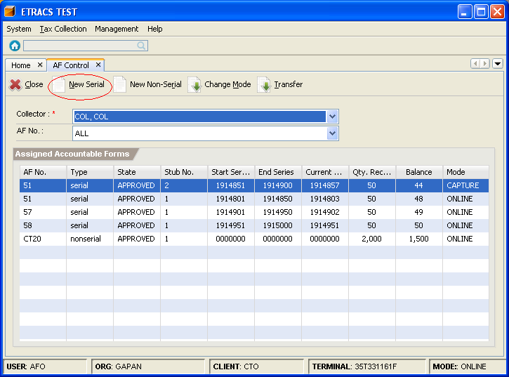

Accountable Form Control
This facility enables you to forward the accountable form balances of a collector to the system,
change the mode of accountable form, and transfer the accountable form from one collector to the
other collector.
How to forward collector's accountable form balances? (For Serial Type)
1. On the menu toolbar, go to "Tax Collection -> Transaction -> AF Contol" item.
You can also click on the "AF Control" icon from the home page.
2. Click on the "New Serial" button or press [Alt+N].

3. Specify the accountable form information.
4. Click on the "Save" button.
How to forward collector's accountable form balances? (For Non-Serial Type)
1. Go to "AF Control" page. (Please refer to Forwarding Collector's Accountable Form (For Serial Type) - Step 1)
2. Click on the "New Non-Serial" button or press [Alt+R].
3. Specify the accountable form information. Quantity Received and Quantity Issued must be specified by pieces.
4. Click on the "Save" button.
How to change the mode of accountable form?
1. Go to "AF Control" page. (Please refer to Forwarding Collector's Accountable Form (For Serial Type) - Step 1)
2. Select a collector and accountable form from the list, and click on the "Change Mode" button or press [Alt+M].
3. Select a mode, and click on the "OK" button.
How to transfer an accountable form?
1. Go to "AF Control" page. (Please refer to Forwarding Collector's Accountable Form (For Serial Type) - Step 1)
2. Select a collector and accountable form from the list, and click on the "Transfer" button or press [Alt+T].
3. Select a collector whom to transfer the accountable form, and click on the "Transfer" button.